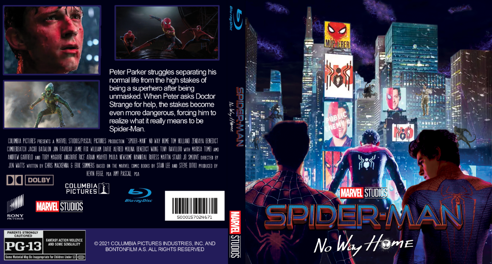

Personal and Academic Projects
Below are some of my projects related to my major and personal interests.
Website with Navigation and Tables
This website shows my skills when it comes to making a website. It has multiple pages which include a family-friendly meme, boards page, tic tac toe game, palindrome checker, a benefit with health benefits, and a user information form.
NavWebsiteSins of the Revenant Game
This is the first game I have created with animations.
Spider-Man: No Way Home DVD cover
This is one of the first projects I created, a DVD cover using different images from the movie Spider-Man No Way Home.
Rapid Sloth Energy Drink
This is my personal design and logo for an energy drink/company that shows off the typography, what the website would look like, and some possbile advertisements